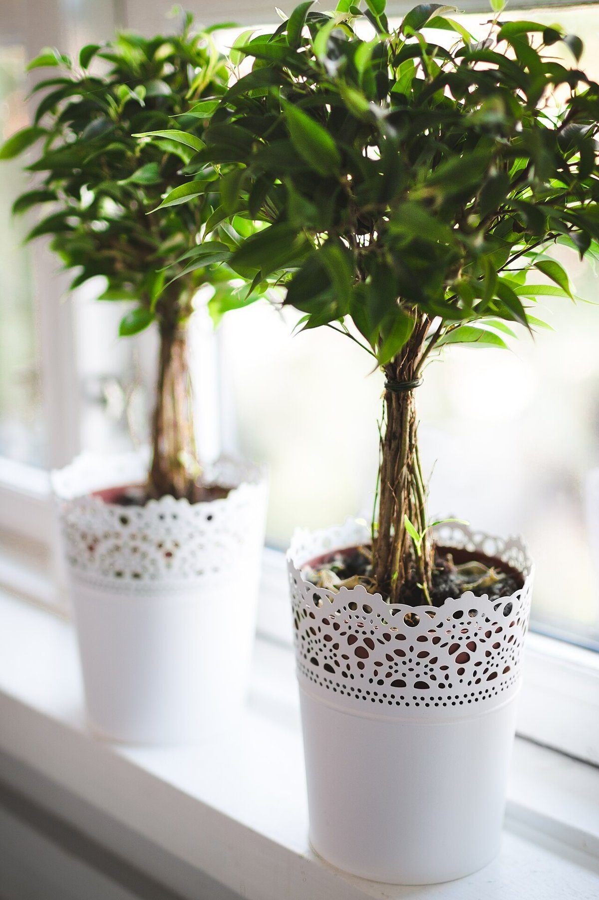

口コミ
以下は実際のお客様の声ではなく、制作側が作成したイメージ例です。口コミページがどのような見え方になるかを、確認いただくための文章です。
イメージ例ふだん使いできるカフェを探しています。どんな時間の過ごし方ができるのか、気になっています。
イメージ例問い合わせる前に、営業時間や定休日はどこで確認できるのだろうと思っています。電話で聞けると分かると、助かります。
イメージ例Instagramの投稿を見て、お店の最新の様子を知りたいと思っています。メニューが決まったらここにも載るといいな、という期待があります。
実際の口コミ・お客様の声の掲載は、お店のご確認後に差し替えます。(営業用サンプルとしての注記です)
